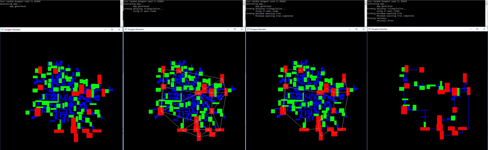

Random Dungeon Generator
Summary
Using a combination of random steering, Delaunay triangulation and minimum spanning trees this algorithm generates a random dungeon layout according the specifications. Most settings can be altered from the room count (default 150) to the ammount of edges to be added back in after creating the minimum spanning tree (default 15%).
Process
1) The algorithm uses chi-squared distribution to randomly generate dimensions for each room.
This gives nice variance so we dont end up with only square rooms or only 1 pixel wide hallways. Each time a room is generated, its origin is set to a random location within a
pre-defined max distance from the center of the screen. This ensures that the rooms are not placed directly on top of each other and gives a little bit more randomness to the overall
design. Its color is also chosen based on its size so rooms that are less than 50% of the max size are blue, rooms between 50%-80% of the max size are green and rooms above 80% of the
max size are red
2) Next the rooms are steered by simply calculating a random direction (0-360 degrees) and moving in that direction until no longer colliding with another room.
At first the rooms only need to move a few pixels but slowly thes reach the outer edge of the scree. This is all done live so you can see watch each room as it finds its place
within the dungeon.
3) Now that the rooms are no longer colliding with each other the center points of the red rooms (large) are used as points for
Delanuay triangulation. One at a time they are added to the graph which moves the edges around acordingly
until it is complete at which point it displays on screen.
4) Once you have a Delaunay graph, moving to a minimum spanning tree is relatively straightforward. However it makes for
a rather boring layout with no loops, just dead ends. To fix this we will add back in 15% of the edges removed in the transition from Delaunay to MST.
5) Now all thats left is to
connect each room that is linked by an edge in the graph. To do this we simply draw an L shaped hallway connecting the two points of the edge and then remove any room that is not colliding
with one of these new hallways. This removes all unnecesary rooms and what you are left with is a dungeon layout.